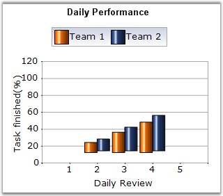

Column Range Chart is similar to the Column Chart except that each column is rendered over a range. Therefore the user must specify the y-axis Starting and Ending values for each point.
The following figure shows a Column Range Chart.

Figure 51: Chart displaying Column Range Series
Chart Details
|
Details | |
|
Number of Y values per point |
2 |
|
Number of Series |
One or More |
|
Cannot be Combined with |
Pie, Bar, Stacked Bar charts, Polar, Radar. |
The following code snippet illustrates this.
|
[C#]
// Create chart series and add data points into it. ChartSeries series = this.ChartWebControl1.Model.NewSeries("Series 0",ChartSeriesType.ColumnRange); series.Points.Add(0,100,400); series.Points.Add(2,300,600); series.Points.Add(4,200,700); series.Text = series.Name;
// Add the series to the chart series collection. this.ChartWebControl1.Series.Add(series); |
|
[VB.NET]
' Create chart series and add data point into it. Dim series As ChartSeries = Me.ChartWebControl1.Model.NewSeries("Series 0",ChartSeriesType.ColumnRange) series.Points.Add(0,100,400) series.Points.Add(2,300,600) series.Points.Add(4,200,700) series.Text = series.Name
' Add the series to the chart series collection. Me.ChartWebControl1.Series.Add(series) |